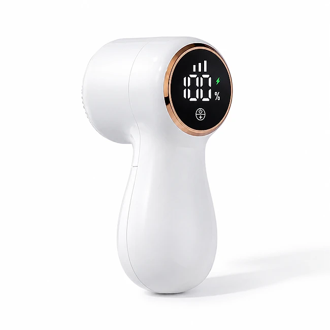
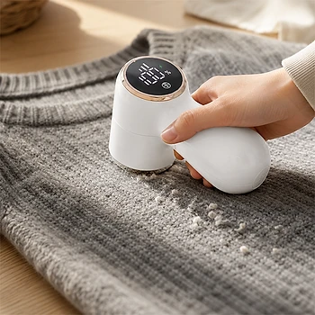

Was ist NoFuzz und wie funktioniert es?
NoFuzz ist ein elektrischer, wiederaufladbarer Fusselrasierer. Er entfernt die kleinen Knötchen, die sich mit der Zeit auf Pullovern, Strickjacken, Mänteln, Sportkleidung, Decken und Polstermöbeln bilden. Laut der offiziellen Website handelt es sich um ein „neues und verbessertes Modell 2026“, das auf allen Stoffarten funktionieren und Kleidung wieder wie neu aussehen lassen soll.
Das Prinzip ist bei allen Fusselrasierern ähnlich. Unter einem Schutzgitter dreht sich eine kleine Klinge. Wenn Sie das Gerät über den Stoff führen, ragen die Knötchen durch die Öffnungen des Gitters und werden abgeschnitten, während das Gitter den Stoff selbst schützt. Die Fusseln landen in einem herausnehmbaren Behälter mit Sichtfenster, sodass Sie den Füllstand sehen, ohne ihn zu öffnen.
Als Besonderheiten nennt der Hersteller eine Regelung in drei Geschwindigkeitsstufen, ein digitales LCD-Display, das gleichzeitig Stufe, Akkustand in Prozent und Ladestatus anzeigt, eine Aufladung über USB-C und ein abgerundetes Design, das angenehm in der Hand liegt. Zusätzlich gibt es einen sogenannten Sterilisationsmodus, der per langem Tastendruck aktiviert wird.
Laut Spezifikation besteht das Gehäuse aus ABS-Kunststoff und misst 138 × 72 × 59 Millimeter. Die Website spricht von über 12.000 verifizierten Bewertungen und über 128.000 zufriedenen Kunden. Auf der Bestellseite selbst sind allerdings nur zwei Kundenstimmen abgedruckt: Marcus T. schreibt, das Gerät habe drei verschlissene Wollmäntel in unter 20 Minuten wieder ordentlich gemacht, und Stefan H. lobt das Display, weil es kein Rätselraten beim Akkustand mehr gebe.
Zur Einordnung: Elektrische Fusselrasierer sind ein bewährtes, günstiges Haushaltsgerät. Sie funktionieren bei Wolle, Baumwolle und Kunstfasern in der Regel gut. Bei sehr feinen oder lose gestrickten Stoffen ist Vorsicht nötig, denn zu viel Druck kann Fäden erfassen. Wunder darf man nicht erwarten: Ein stark verschlissener Pullover wird wieder ordentlicher, aber nicht neu.
NoFuzz Funktionen
Laut den Produktspezifikationen auf der offiziellen Website bietet NoFuzz:
Drei Stufen: niedrig für empfindliche Stoffe, mittel für den Alltag, hoch für dicke Strickwaren und Polster.
Display: digitales LCD mit Stufe, Akkustand in Prozent und Ladestatus.
Laden: USB-C, Eingangsspannung 5 V / 1 A, Nennleistung 2,5 W.
Schutz: Schutzgitter über der Klinge, herausnehmbarer Fusselbehälter mit Sichtfenster.
Maße und Material: 138 × 72 × 59 mm, ABS-Kunststoff, Betriebstemperatur 5 bis 35 °C.
Lieferumfang: Gerät, USB-Ladekabel, Reinigungsbürste, Bedienungsanleitung auf Englisch.
Auf den Produktbildern ist ein weißes, rundliches Gerät mit rundem Display und kupferfarbenem Rand zu sehen. Ein Bild zeigt einen grauen Strickpullover vorher und nachher, ein anderes den Lieferumfang mit Kabel und Reinigungsbürste.
Die Stufen werden laut Anleitung per kurzem Tastendruck gewählt: einmal für niedrig, zweimal für mittel, dreimal für hoch, viermal schaltet das Gerät aus. Den Sterilisationsmodus aktivieren Sie, indem Sie den Ein- und Ausschalter ein bis zwei Sekunden gedrückt halten. Was dieser Modus genau bewirkt, erklärt die Website nicht. Angaben zur Akkukapazität und zur Laufzeit pro Ladung fehlen; laut häufig gestellten Fragen reicht eine Ladung für mehrere komplette Sitzungen.
NoFuzz Anwendung
Laden Sie das Gerät vor der ersten Nutzung über USB-C vollständig auf; das Display zeigt den Ladestand in Prozent. Legen Sie das Kleidungsstück flach auf eine feste Unterlage und ziehen Sie den Stoff leicht glatt.
Wählen Sie die passende Stufe: niedrig für feine Strickwaren und Kaschmir, mittel für Alltagskleidung, hoch für dicke Wolle, Fleece und Polstermöbel. Laut häufig gestellten Fragen sollten Sie bei Unsicherheit zuerst an einer unauffälligen Stelle testen. Führen Sie das Gerät in kleinen, kreisenden oder geraden Bewegungen über den Stoff.
Die Website gibt dazu wichtige Hinweise: das Gerät nicht über längere Zeit ununterbrochen benutzen und zwischendurch Pausen einlegen, nicht zu fest aufdrücken, sondern die Klinge die Arbeit machen lassen, und das Gerät von Wasser und feuchten Umgebungen fernhalten. Zerlegen oder reparieren Sie es nicht selbst, und bewahren Sie es außerhalb der Reichweite von Kindern auf.
Zum Entleeren drehen Sie die Fusselkammer ab, entfernen die gesammelten Fusseln und setzen sie wieder auf; Werkzeug ist laut Website nicht nötig. Reinigen Sie Gitter und Klinge regelmäßig mit der beiliegenden Bürste, damit die Leistung erhalten bleibt. Schalten Sie das Gerät dabei immer aus. Betreiben Sie es laut Spezifikation nur bei Temperaturen zwischen 5 und 35 °C.
NoFuzz – Rückerstattung
Laut der offiziellen Website gilt eine 30-Tage-Geld-zurück-Garantie. Wenn Sie mit NoFuzz nicht rundum zufrieden sind, wenden Sie sich an den Kundenservice, um eine Rückerstattung oder einen Umtausch zu erhalten. Laut häufig gestellten Fragen können Sie das Gerät innerhalb von 30 Tagen ab Erhalt zurücksenden.
Für die Einzelheiten verweist die Website auf ihre Richtlinie zu Rückgabe und Rückerstattung im Fußbereich der Seite. Dort finden Sie außerdem einen Link zum Widerruf des Vertrags, die Kontaktseite, die Nutzungsbestimmungen, die Datenschutzbestimmung und das Impressum. Bei Verkäufern dieser Art müssen Rücksendungen üblicherweise vorher angemeldet werden, und die Ware sollte vollständig mit Kabel, Bürste und Verpackung zurückgehen.
Laut häufig gestellten Fragen werden alle Bestellungen innerhalb von 48 Stunden nach Bestellbestätigung versendet. Sie erhalten eine E-Mail mit Sendungsverfolgungsnummer und einem Link zum Lieferstatus. Der Standardversand dauert je nach Standort 5 bis 12 Werktage, zu Spitzenzeiten etwas länger.
Für Verbraucher in der EU gilt zusätzlich das gesetzliche Widerrufsrecht von 14 Tagen, unabhängig von der freiwilligen Garantie. Bewahren Sie Verpackung, Zubehör und Bestellbestätigung auf und testen Sie das Gerät bald nach der Lieferung, damit Sie innerhalb der Frist reagieren können. Notieren Sie bei einer Rücksendung die Sendungsnummer, denn sie dient als Nachweis für die Erstattung, falls es später Rückfragen gibt.
NoFuzz – Wo kaufen?
NoFuzz wird über die offizielle Bestellseite get-nofuzz.com verkauft. Dort wählen Sie direkt Ihr Paket mit einem bis vier Geräten, geben die Lieferadresse ein und bezahlen per Kreditkarte oder einer der angezeigten Zahlungsarten. Laut Website sind alle Transaktionen verschlüsselt.
Elektrische Fusselrasierer in sehr ähnlicher Bauform werden von vielen Anbietern verkauft, auch im Elektronik- und Drogeriehandel. Bei Angeboten auf Marktplätzen ist nicht sicher, ob es sich um dasselbe Modell mit demselben Display und Zubehör handelt, und die 30-Tage-Garantie des Verkäufers gilt dort in der Regel nicht.
Die Bestellseite arbeitet mit einem Promo-Code, einem Countdown bis Mitternacht und einem Zusatzangebot nach dem Kauf, das Sie ablehnen können. Lassen Sie sich davon nicht drängen. Prüfen Sie vor dem Abschluss die Bestellübersicht, das gewählte Land und die Versandkosten, und achten Sie darauf, dass Sie sich wirklich auf get-nofuzz.com befinden, denn nur dort gelten die Bedingungen des Verkäufers. Wer nur ein Gerät für den eigenen Haushalt braucht, muss kein größeres Paket wählen; ein Gerät reicht für Kleidung und Polster meist aus.
Um sicherzugehen, dass Sie das Originalprodukt erhalten, besuchen die meisten Nutzer die offizielle Website.
Ist NoFuzz Betrug?
Nach den verfügbaren Informationen gibt es keinen Hinweis darauf, dass NoFuzz Betrug ist. Das Gerät wird über eine eigene Bestellseite mit ausführlicher Produktspezifikation, Bedienungshinweisen, Kundenbewertungen, häufig gestellten Fragen, Rückgaberichtlinie, Widerrufslink und Impressum verkauft. Die Seite gehört zum selben Shopsystem wie andere Produkte der Label Products B.V. aus den Niederlanden.
Positiv sind die konkreten technischen Daten mit Maßen, Spannung, Leistung und Lieferumfang, die klare Erklärung der drei Stufen, die Sicherheitshinweise, die 30-tägige Geld-zurück-Garantie und der Versand innerhalb von 48 Stunden mit Sendungsverfolgung.
Es gibt aber Punkte, die Aufmerksamkeit verdienen. In den häufig gestellten Fragen zur Rückgabe ist von einem „IonShower“ die Rede, offenbar ein Überbleibsel aus der Vorlage eines anderen Produkts. Akkukapazität und Laufzeit werden nicht genannt, der Sterilisationsmodus wird nicht erklärt, und die Bedienungsanleitung liegt nur auf Englisch bei. Angaben wie über 128.000 zufriedene Kunden lassen sich nicht überprüfen, und die Bestellseite arbeitet mit Countdown und Promo-Code als Verkaufsdruck.
Vorsicht ist bei sehr ähnlichen Geräten auf anderen Plattformen geboten, denn dort ist oft unklar, wer der Verkäufer ist und welche Garantie gilt.
Wer einen einfachen Fusselrasierer mit Display sucht, ihn zuerst an einer unauffälligen Stelle testet und direkt auf der offiziellen Website bestellt, geht nach heutigem Stand kein besonderes Risiko ein.
Wer Produktdetails überprüfen oder die aktuelle Verfügbarkeit prüfen möchte, ist auf der offiziellen NoFuzz-Website am sichersten aufgehoben.
